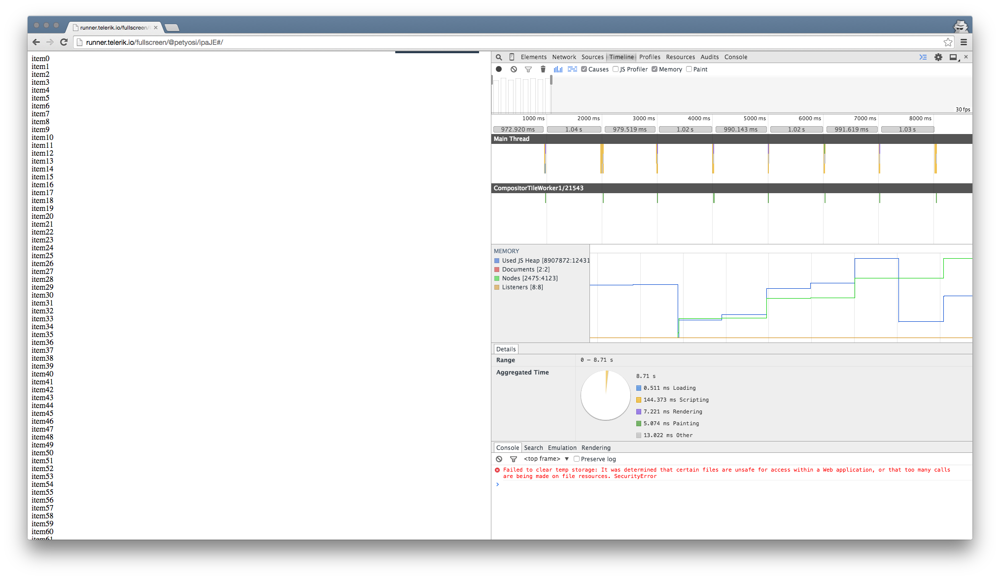
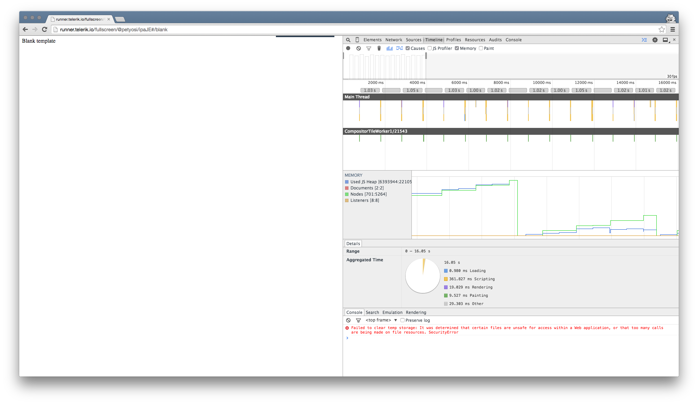
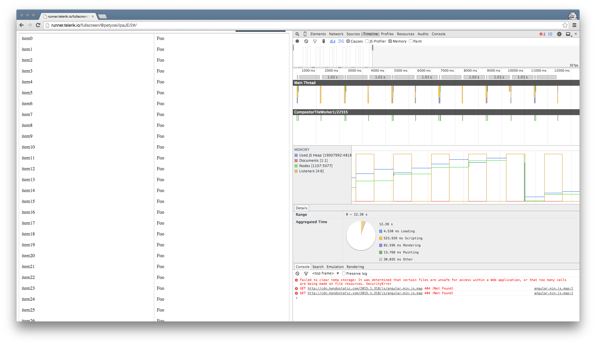

Memory Usage Leaks with Kendo UI and AngularJS
Under certain conditions, several Kendo UI users have discovered that the browser memory usage continuously increases when data-bound widgets (like the Grid) are created and destroyed in the AngularJS context. Usually this occurs in conjunction with the AngularJS routing.
The "right way" to look for memory leaks
Such reports are not unique to the Kendo UI directives. The Angular JS repository features several threads which dig into various aspects of the problem, Issue #4864 being one of the most prominent ones. The post from Igor Minar offers several insights which highlight most of the problems our team has stumbled upon too. The takeaways are the following:
- Use new, "clean" chrome profile for testing, since extensions may cause false leaks. Incognito mode works, too. From our experience, ad blockers are quite common causes.
- Triggering the garbage collect will cause many "leaked" detached DOM nodes to be collected. If this is not so, then there is a real problem present.
- According to Igor, the Chrome browser should be started with
--js-flags="--nocrankshaft --noopt". We did not notice any effect of these flags in our test cases, though.
Create a simple test case
In order to verify that our implementation does not differ from the default AngularJS behavior, we created a simplified test case which uses the ng-repeat directive and the router:
<!DOCTYPE html>
<html>
<head>
<script src="https://code.jquery.com/jquery-2.1.3.min.js"></script>
<script src="https://ajax.googleapis.com/ajax/libs/angularjs/1.3.14/angular.min.js"></script>
<script src="https://ajax.googleapis.com/ajax/libs/angularjs/1.3.14/angular-route.min.js"></script>
</head>
<body>
<script src="https://ajax.googleapis.com/ajax/libs/angularjs/1.3.14/angular-route.min.js"></script>
<div ng-app="KendoDemos">
<div ng-view>
</div>
<script type="text/javascript" charset="utf-8">
angular.module("KendoDemos", [ 'ngRoute' ])
.config(['$routeProvider', function($routeProvider) {
$routeProvider.
when('/blank', {
template: 'Blank template',
controller: 'blank'
}).
when('/', {
template: '<div ng-repeat="item in items"></div>',
controller: 'main'
});
}]).controller("main", function($scope, $timeout, $location){
$scope.items = [];
for (var i = 0; i < 100; i++) {
$scope.items.push("item" + i);
}
$timeout(function() {
$location.url("/blank");
}, 1000);
})
.controller("blank", function($scope, $timeout, $location){
$timeout(function() {
$location.url("/");
}, 1000);
});
</script>
</div>
</body>
</html>
The code is available in the Dojo, too.
Let's observe how the page performs in the Chrome timeline by recording the sample above:

The DOM count increases as the routes toggle with each other. This looks like a leak. Let's perform the same, but we will force the garbage collect during the recording:

The seemingly retained detached nodes are getting collected by the garbage collector.
Extend the test to Kendo UI Grid
Let's replace the repeat directive above with a Kendo UI Grid.
<!DOCTYPE html>
<html>
<head>
<link rel="stylesheet" href="http://cdn.kendostatic.com/2015.1.318/styles/kendo.common.min.css">
<link rel="stylesheet" href="http://cdn.kendostatic.com/2015.1.318/styles/kendo.rtl.min.css">
<link rel="stylesheet" href="http://cdn.kendostatic.com/2015.1.318/styles/kendo.default.min.css">
<link rel="stylesheet" href="http://cdn.kendostatic.com/2015.1.318/styles/kendo.dataviz.min.css">
<link rel="stylesheet" href="http://cdn.kendostatic.com/2015.1.318/styles/kendo.dataviz.default.min.css">
<link rel="stylesheet" href="http://cdn.kendostatic.com/2015.1.318/styles/kendo.mobile.all.min.css">
<script src="http://code.jquery.com/jquery-1.9.1.min.js"></script>
<script src="http://cdn.kendostatic.com/2015.1.318/js/angular.min.js"></script>
<script src="https://ajax.googleapis.com/ajax/libs/angularjs/1.3.14/angular-route.min.js"></script>
<script src="http://cdn.kendostatic.com/2015.1.318/js/jszip.min.js"></script>
<script src="http://cdn.kendostatic.com/2015.1.318/js/kendo.all.min.js"></script>
</head>
<body>
<div ng-app="KendoDemos">
<div ng-view>
</div>
<script type="text/javascript" charset="utf-8">
angular.module("KendoDemos", [ 'kendo.directives', 'ngRoute' ])
.config(['$routeProvider', function($routeProvider) {
$routeProvider.
when('/blank', {
template: 'Blank template',
controller: 'blank'
}).
when('/', {
template: '<table kendo-grid k-data-source="items"><tr k-row-template><td></td><td>Foo</td></tr></table>',
controller: 'main'
});
}]).controller("main", function($scope, $timeout, $location){
$scope.items = [];
for (var i = 0; i < 100; i++) {
$scope.items.push("item" + i);
}
$timeout(function() {
$location.url("/blank");
}, 1000);
})
.controller("blank", function($scope, $timeout, $location){
$timeout(function() {
$location.url("/");
}, 1000);
});
</script>
</div>
</body>
</html>
The sample above performs in the same way. Nodes are retained, but collecting the garbage drops the node count back to its original state.

Based on this research, we consider the memory usage of the Kendo UI directives (although not perfect) to be unavoidable given the AngularJS context.
Worth noticing is that the majority of the Kendo UI Widgets do not exhibit such leaks outside of the AngularJS context.
One fix that has worked has been to clean up before a route change. So wherever we change to a new route via $location.path('/my/new/route'), we execute some extra code to clear out the HTML in the prior view using:
kendo.destroy(document.body);
$('.view-root-node').html('');